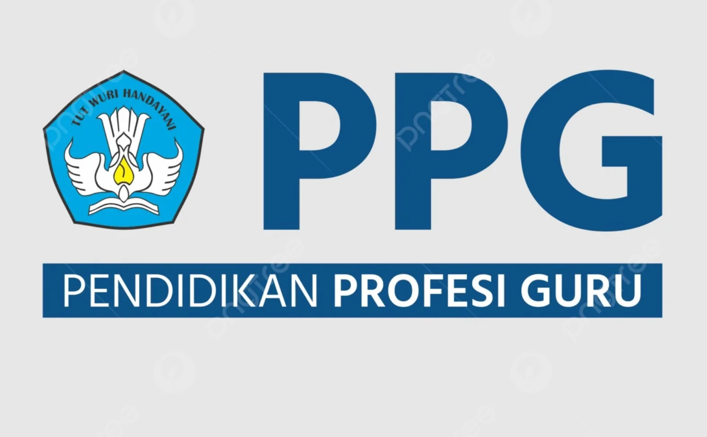
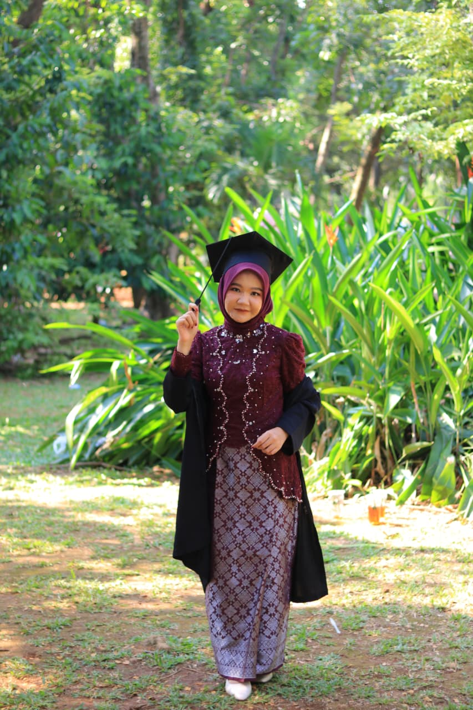
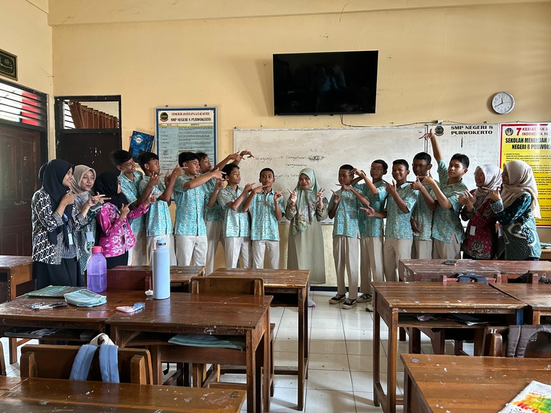
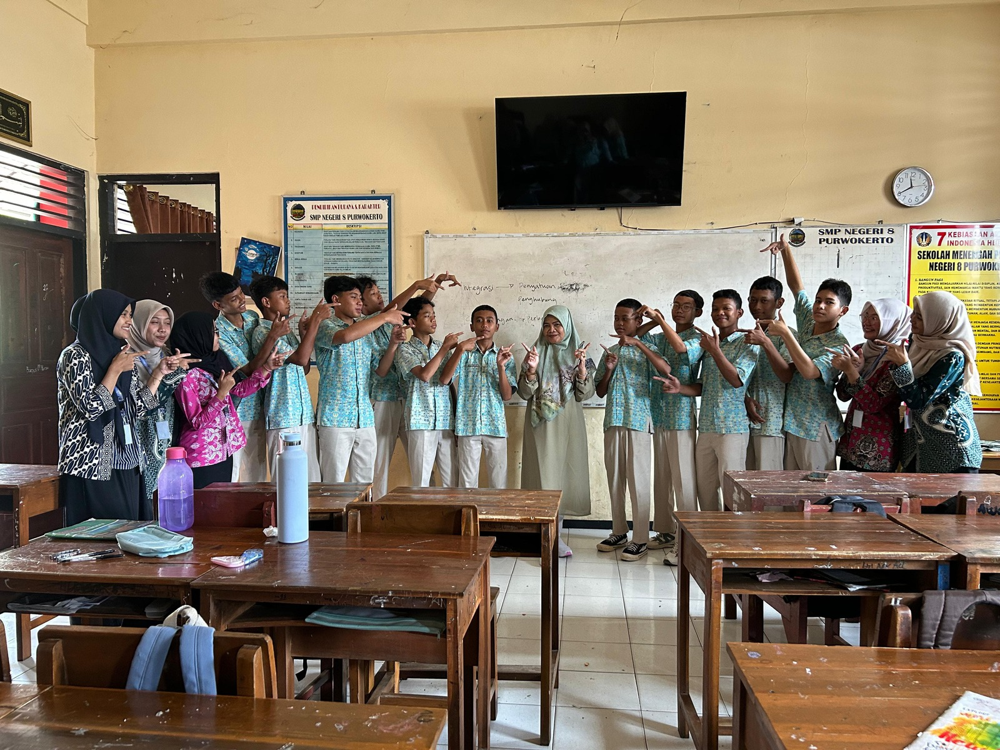

Kategori
(1)
Judul Refleksi
Subjudul Refleksi
Kutipan akademik refleksi
Konten refleksi akan dimuat di sini...
PPG Calon Guru • Universitas Muhammadiyah Purwokerto
Refleksi Pengalaman Belajar Program PPG Calon Guru Gelombang 1 Tahun 2026 — Pendidikan Pancasila dan Kewarganegaraan, Universitas Muhammadiyah Purwokerto.

Kemitraan PPL II
Program Studi PPKn • FKIP Universitas Muhammadiyah Purwokerto
Saya adalah calon pendidik profesional pada program studi Pendidikan Pancasila dan Kewarganegaraan (PPKn) dari Universitas Muhammadiyah Purwokerto. Melalui program PPG Calon Guru Gelombang 1 Tahun 2026, saya telah menjalani proses deskonstruksi dan rekonstruksi pemikiran pedagogis yang mendalam.
Bagi saya, pembelajaran PPKn bukanlah ruang indoktrinasi mekanis atau sekadar transfer butir-butir hafalan regulasi. PPKn adalah medium penempaan budi pekerti, ruang dialog demokratis, dan wadah pengasahan nurani kebangsaan yang berkeadilan sosial serta menjunjung tinggi martabat kemanusiaan.
Pengalaman mengajar terbimbing di SMP Negeri 8 Purwokerto semakin meneguhkan keyakinan saya: ruang kelas yang hidup dimulai ketika guru meletakkan rasa aman, empati mendalam, dan penghargaan terhadap keunikan setiap anak di atas tuntutan administratif semata.
Pendidikan bukan sekadar mengisi wadah kosong dengan materi, melainkan menyalakan api kesadaran agar setiap anak menemukan keselamatan dan kebahagiaannya sebagai manusia seutuhnya.


*Klik foto polaroid untuk memperbesar tampilan dan catatan lapangan
Pendidikan yang tidak lagi mengejar angka semu, melainkan menumbuhkan fitrah kemanusiaan.
Pendidikan yang berakar pada pemikiran Ki Hadjar Dewantara—menghormati kodrat alam dan zaman, tanpa menyeragamkan potensi anak.
Menyesuaikan proses dan dukungan belajar berdasarkan kesiapan serta minat tanpa memberi label permanen (Growth Mindset).
Aktivitas belajar yang berkesadaran, bermakna, dan menyenangkan, didukung asesmen diagnostik serta formatif berkelanjutan.
Memadukan kompetensi sosial emosional (CASEL) dan nilai keislaman untuk melahirkan warga negara berkarakter Pancasila.
Belajar dari realitas kelas di SMP Negeri 8 Purwokerto menuju praktik mengajar yang berpusat pada kebutuhan nyata murid.
Menggunakan asesmen awal untuk merancang model belajar responsif dan menciptakan iklim kelas yang aman berpendapat.
Menerapkan assessment as/for learning dengan umpan balik deskriptif yang membangkitkan daya juang murid.
Menyelaraskan kata dengan tindakan, mengasah empati, regulasi emosi, serta integritas etika pendidik.
Terbuka terhadap masukan rekan sejawat, dosen pembimbing, dan guru pamong demi perbaikan tiada henti.
Peta tindakan strategis dalam 100 hari pertama mengabdi pasca kelulusan program PPG Calon Guru.
Mendiagnosis kesiapan, gaya belajar, dan kondisi psikologis anak sebelum menyusun materi agar tidak ada murid yang terabaikan.
Menghubungkan teori Pancasila dan hukum dengan persoalan nyata di masyarakat lewat studi kasus, diskusi dialektis, dan aksi kebajikan.
Rutin merefleksikan kegagalan mengajar, aktif dalam komunitas belajar guru (MGMP/Kombel), serta berinisiatif memajukan ekosistem sekolah.